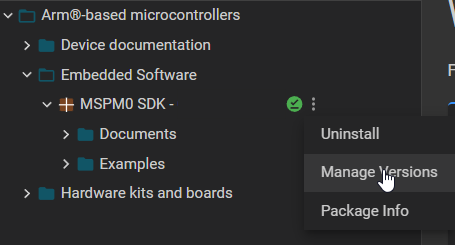
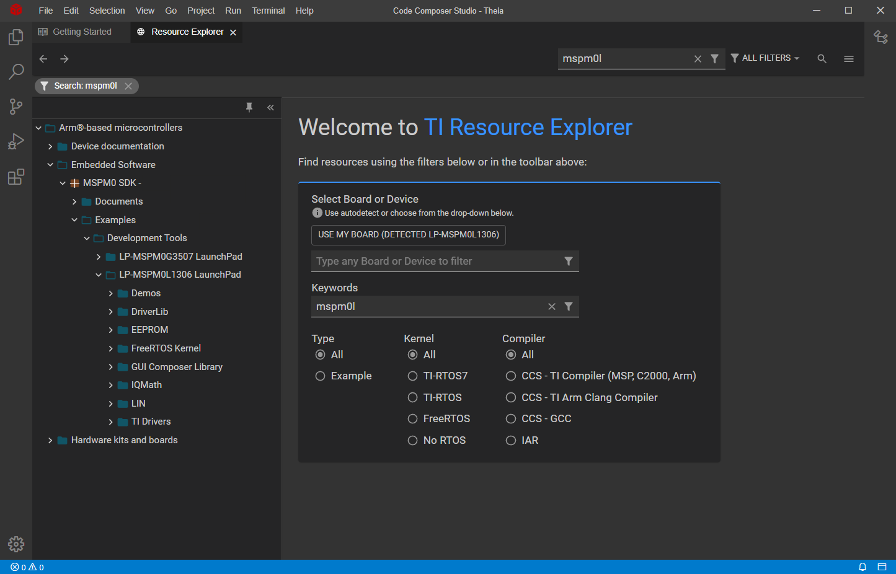
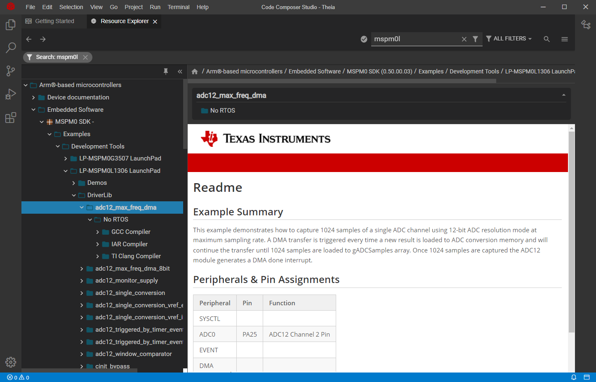
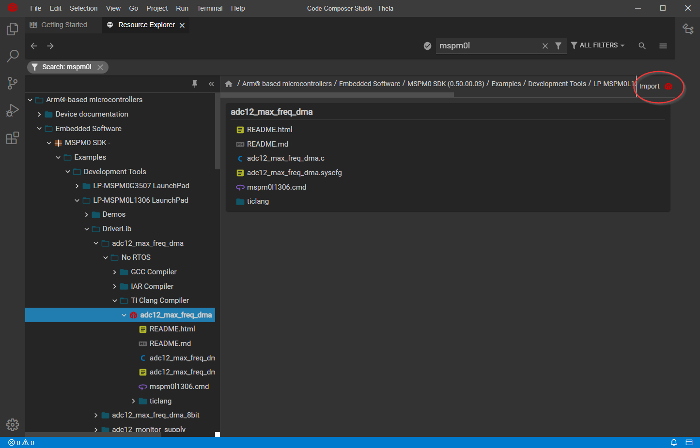
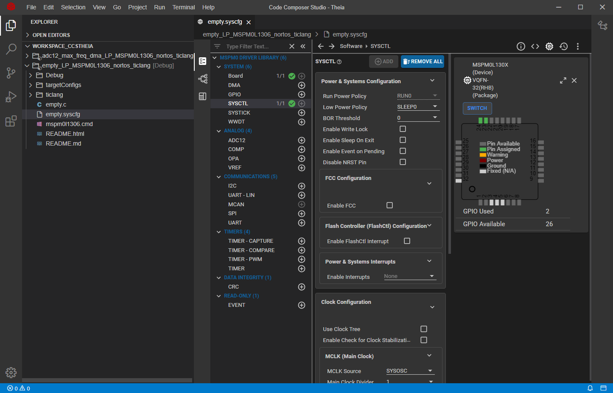

适用于 MSPM0 MCU 的 Code Composer Studio Theia IDE 版本1.3.1+¶
目录¶
请先阅读¶
如何使用本指南¶
本指南仅介绍了软件开发环境的设置和基本操作、并未全面描述 MSPM0微控制器或完整的开发软件和硬件系统。 有关这些项目的详细信息、请参阅德州仪器(TI)的相关文档中列出的相应 TI 和 CCS 文档 德州仪器(TI)的相关文档。
有关注意事项的信息¶
本指南可能包含注意事项。
小心 - 这是一个警告声明的例子。 警告声明描述了可能损坏软件或设备的情况。
仔细阅读每条注意事项。
德州仪器(TI)的相关文档¶
MSPM0开发工具文档：
MSPM0器件文档：
Code Composer 文档：
如果您需要帮助¶
MSPM0 MCU 的 E2E 社区支持论坛 可与同行工程师、 TI 工程师和其他专家进行互动。 更多器件的额外信息可在 MSPM0网站 上找到。
1. 软件安装¶
Code Composer Studio Theia IDE 可从 TI.com 获取。
MSPM0微控制器和 MSPM0 SDK 需要 CCS Theia 1.3.1或更高版本。
注 此版本包括对 MSPM0量产型号的支持，不支持早期型号。
请参阅 MSPM0 SDK 文档、查找适合您的 IDE 版本的 SDK。
2. 开发流程¶
本章介绍了如何使用 CCS Theia 来运行演示程序和开发应用软件。
2.1 概览¶
Code Composer Studio (CCS) Theia 是一种集成开发环境(IDE)，支持 TI 的微控制器和嵌入式处理器产品系列。 Code Composer Studio Theia 包含一整套用于开发和调试嵌入式应用的工具。
本指南仅介绍了使用 MSPM0的 Code Composer Studio Theia IDE 的一些特性和功能。
有关 CCS Theia 的更多文档、请访问 TI.com 或 IDE 中包含的”Help”菜单。
2.2 使用项目向导创建新项目¶
CCS Theia 包括一个新的项目向导、该向导提供了一种创建新项目的直观且简单的方法。
选择 File → Create New Project
选择硬件评估板或器件并根据需要使用过滤器
选择一个项目，然后单击 Create

请注意、CCS Theia 将自动检测需要的安装包、包括 SDK 和编译器、 如果需要、它将请求安装。
2.3 在 CCS Theia 中使用 TI Resource Explorer¶
TI Resource Explorer (TI-Rex)可帮助您查找适用于所选平台的所有最新示例、库、演示应用、数据手册等。
此工具可从 https://dev.ti.com/tirex 获取、但它也集成到 CCS Theia 中、从而实现更集成的用户体验。
选择 Help → Getting Started。 请注意、CCS Theia 可以自动检测您的 LaunchPad、以便于导航。

单击 Browse software and examples with Resource Explorer 浏览软件和示例
导航面板可用于查看不同的 TI 产品、文档、软件等
TI Resource Explorer 还允许通过单击产品旁边的并选择 Manage Versions 来选择特定的 SDK 版本。 请注意、已安装的产品也会显示绿色复选标记。
 使用集成的搜索功能按器件(即 MSPM0L)、中间件(即 DriverLib)或解决方案(即 LIN)进行筛选。
 选择一个示例将显示一个自述文件，其中包含该示例的说明、外设和引脚用法以及如何运行该示例。 
为示例选择一个 CCS 工程、然后点击 Import 将其添加到您的工作区中。

请注意、CCS Theia 将自动检测需要的安装包、包括 SDK 和编译器、 如果需要、它将请求安装。
2.4 将 SysConfig 与 CCS Theia 结合使用¶
MSPM0 SDK 中的一些示例支持 SysConfig 。 SysConfig 是一个直观而全面的图形实用程序集合、用于配置引脚、外设、子系统等 组件。 SysConfig 可帮助您直观地管理、暴露和解决冲突、以便您有更多时间去处理 创建差异化应用程序。
SysConfig 工具可作为独立安装程序提供、也可在dev.ti.com 的云上使用、或是集成到 CCS Theia 中以获得更好、更轻松的体验。
在 CCS Theia 中导入 MSPM0项目后、只需双击 .syscfg 文件即可打开 SysConfig。 
有关将 SysConfig 与 MSPM0一起使用的更多信息、请访问 Using SysConfig with MSPM0 指南。
2.5 在 MSPM0衍生产品之间迁移¶
SysConfig 允许在 MSPM0衍生产品之间更轻松地进行移植；但需要进行一些手动修改。 以下步骤适用于 TI Arm Clang、但类似的步骤适用于 Arm GCC。
在 SysConfig 中，启用设备视图并单击 SWITCH

为新的 MSPM0设备选择相应的选项，然后单击 CONFIRM。

请注意、SysConfig 将突出显示与移植发生的任何冲突、例如不可用的引脚和外设。 根据需要修复任何冲突。
CCS Theia 将自动完成移植并添加相应的.ccxml 文件。

在项目属性中，选择 Build → Arm Compiler → Predefined Symbols。 选择器件定义并更新它。

更新链接器和启动文件。 MSPM0 SDK 包含所有 MSPM0衍生产品的默认文件、分别位于
<sdk>\source\ti\devices\msp\m0p\linker_files\ticlang和<sdk>\source\ti\devices\msp\m0p\startup_system_files\ticlang。
请注意、应从工程中排除或删除以前的文件。
解决任何其他问题，例如不兼容的库和源代码。
注意：不使用 SysConfig 时、步骤1-3不适用、需要手动完成步骤4。
2.6 堆栈管理和链接器文件¶
保留的堆栈大小可使用项目设置或在链接器文件中进行配置。
2.6.1 使用 TI Arm Clang 编译器配置堆栈¶
右键单击某个项目，然后选择 Properties。 选择 Build Tools → Arm Linker → Basic Options 并相应地设置堆栈。 
也可以通过添加或编辑 --stack_size=xx 或 --heap_size=xx 直接在链接器.cmd 文件上修改堆栈。
2.6.2 使用 Arm GCC 配置堆栈¶
通过添加或编辑 _Min_Heap_Size = xx 或 _Min_Stack_Size = xx、可以直接在链接器.lds 文件上修改堆栈。
2.7 如何生成 TI .TXT (和其他格式)文件¶
CCS 包含可用于以多个方式生成输出对象的实用程序 与 [MSP-GANG]等编程工具配合使用的格式(https://www.ti.com/tool/MSP-GANG) 和 UniFlash。
2.7.1 使用 Arm Hex 实用程序¶
以下步骤说明了如何使用十六进制启用 TI TXT 格式 集成到 CCS 中的实用程序。
右键单击某个项目，然后选择 Properties。 选择 Build Tools → Arm Hex Utility → Output Format Options。 然后选择 TI-TXT hex (–ti_txt) 选项。

同样的过程可用于生成其他格式；但是、某些格式可能需要其他参数。
一种常见的是英特尔十六进制格式，除选择输出格式 Intel hex (–intel, -i) 外，还需要使用该格式 将存储器和 ROM 宽度指定为参数。
当对 MSPM0使用 Intel hex 时，请在 Build Tools → Arm Hex Utility → General Options 中选择8的内存和 ROM 宽度。

如需更多信息、请访问 Hex utility in CCS。
2.7.2 使用 objcopy 实用程序¶
CCS 包括 Arm objcopy 实用程序、这是一个基于 LLVM 的工具、可用于 生成多种格式的二进制文件。
以下步骤说明了如何使用 objcopy 启用 Intel Hex 格式。
右键单击一个项目，然后选择属性。 选择构建→** Arm objcopy 实用程序并选择启用 Arm objcopy 实用程序**。
使用.hex 扩展名指定输出文件名。

指定
ihex输出格式。
有关 objcopy 的更多信息、请访问此 objcopy guide。
2.8 覆盖预编译库¶
项目可能包括预编译的库、可简化开发和编译时间；但是、 它们不允许开发人员轻易修改源代码。
此类库的一个示例是 MSPM0 DriverLib、如下所示。

覆盖库的一个选项是只需将任何或所有源文件添加到工程中。 MSPM0 SDK 包括 empty_driverlib_src 示例、其中包括所有 DriverLib 源 默认情况下：

2.9 从 SRAM 运行¶
MSPM0-SDK 中包含的示例通常包含链接器文件 创建可从内部闪存运行的应用程序，这些应用程序 在器件复位或下电上电后执行。 但是，在某些情况下、也可以从 SRAM 下载和执行代码。
本节介绍了如何在 SRAM 上执行完整应用程序的步骤。
2.9.1 从 SRAM 运行完整的应用程序¶
以下步骤显示了如何修改基本 GPIO_TOGGLE_OUTPUT 示例从而支持在 LP_MSPM0L1306上从 SRAM 运行程序。 类似的步骤适用于其他示例和器件。
打开链接器.cmd 文件并将其修改为使用 SRAM、如下所示：
禁用 CCS 中默认执行的系统复位。
CCS 包含在器件上执行某些函数的.gel 文件。 这些 文件包含在 CCS 安装文件夹中、位于
<ccs>\ccs_base\emulation\gel>。 下面的屏幕截图 显示了 MSPM0L1306所需的修改：

下载代码并注意该器件将从 SRAM 执行。

2.9.2 从 SRAM 运行函数¶
以下步骤显示了如何声明从 SRAM 执行的函数。
将函数移动到
.TI.ramfunc段。 这可以通过实现 使用属性声明函数__attribute__((section(".TI.ramfunc")))__attribute__((noinline))如下所示：
链接器文件应包含
.TI.ramfunc的位置。 请注意链接器 MSPM0-SDK 中包含的文件已包含此位置、但仅包含此位置在.TI.ramfunc 中放置了任何函数、则适用。
下载代码并注意设备将从 SRAM 执行该功能。
3. 调试应用程序¶
以下调试器已通过 Code Composer Studio Theria IDE 成功测试。
TI XDS 工具、包括集成到 MSPM0 LaunchPad 中的 XDS-110。
3.1 使用 TI XDS 工具¶
TI 为基于 Arm 的器件提供了一系列调试器、包括与 MSPM0 LaunchPad 集成的 XDS-110。
要使用 TI-XDS 调试器，请打开项目选项，单击 General → Connection 然后选择 Texas Instruments XDS110 USB Debug Probe。

3.1.1 闪存加载程序¶
闪存加载程序设置允许在对器件进行写入和擦除时配置一些设置。
要查看和修改这些设置，请打开项目属性并选择 Debug → Category:MSPM0 Flash Settings。

闪存加载程序具有以下选项：
Reset Configuration：允许在写入前后执行软或硬复位。
Program Configuration：在写入时启用/禁用 CRC 校验。 请注意、无论此设置如何、在写入/擦除非 MAIN 时都会执行非 MAIN 的 CRC 验证。
Erase Configuration: 配置当擦除flash的时候要执行哪些操作. 可选项如下:
Erase MAIN memory only: 只擦除MAIN memory.如果尝试写NONMAIN会产生一个错误信息。
Erase MAIN and NONMAIN memory: MAIN 和 NONMAIN memory 都会被擦除， 想了解有关NONMAIN的更多信息请参考 Erasing and Updating NONMAIN Memory。
Erase MAIN and NONMAIN necessary sectors only: 只擦除将要被更新的扇区，包含MAIN和NONMAIN区域。关于flash扇区的大小请参考具体器件的数据手册, 想了解有关NONMAIN的更多信息请参考 Erasing and Updating NONMAIN Memory.
Erase MAIN memory sectors by range: 只擦除 Sector Erase Start Address 和 Sector Erase End Address 之间的扇区。关于Memory扇区大小和地址信息请参考相关数据手册。 比如说，在每个扇区为1KB大小的 MSPM0 器件上设置起始地址 0x0000_0100 到结束地址0x0000_0400 的区域，将会擦除扇区0x0000_0000-0x0000_03FF 和 0x0000_0400-0x0000_07FF。 请注意，只有MAIN memory 会被擦除，如果试图写NONMAIN会产生一个错误信息。
Do not erase Flash memory: 不擦除Flash。如果不擦除就尝试写NONMAIN会产生一个错误信息。
Advanced Configuration：禁用验证设备 ID。 用于调试目的、不建议禁用。
Enable Verbose Output：在运行 Flash 加载程序时显示调试信息。
3.1.2 擦除和更新NONMAIN Memory¶
注意：擦除和写入NONMAIN 时应格外小心。 如果操作不正确，器件将被 锁定在永久不可恢复的状态。
NONMAIN 是flash memory里的一块特定区域，用来存储器件启动后的操作相关配置数据。NONMAIN 不应该被用作他用. 更多信息请参考器件的技术参考手册。
当需要配置NONMAIN时，TI 建议使用SysConfig中的NONMAIN configurator.更多信息请参考 Using SysConfig with MSPM0。
如Flash Loader 章节中所描述, NONMAIN 是通过选择擦除配置中的 Erase MAIN and NON-MAIN memory 或者 Erase MAIN and NONMAIN necessary sectors only 进行擦除。
请注意如果其中一个选项使能了， Flash Loader将会擦除NONMAIN; 并且当写入完成，器件会运行一个CRC校验，如果发现NONMAIN 内容校验失败，将会尝试恢复成默认值。
3.2 断点类型¶
CCS Theia 调试器使用有限数量的片上调试资源(特别是4个硬件断点和2个硬件观察点)。 MSPM0不支持闪存中的软件断点。 这意味着在 CCS Theia 内最多可以设置4个硬件断点。
CCS Theia 可以使用断点在 main 停止或在 exit 停止器件。 通过选择 Debug → Category:Program/Memory Load Options，可以在项目属性中更新这些设置。

如果设置了最大断点数、将显示以下警告。
3.3 连接到一个不正确的设备¶
如果连接了不受支持的设备，CCS 将显示警告，如下所示：

不建议对不正确的设备进行写入，这可能会导致意外和不可恢复。
4. 已知问题和常见问题解答(FAQ)¶
请参阅 SDK 内部的 Known Issues and FAQ。